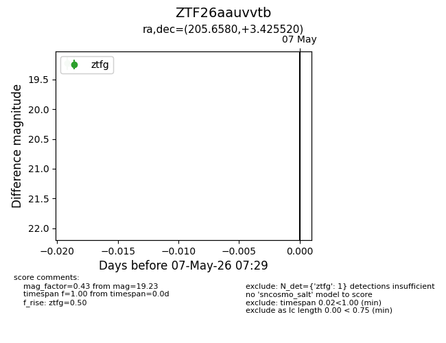
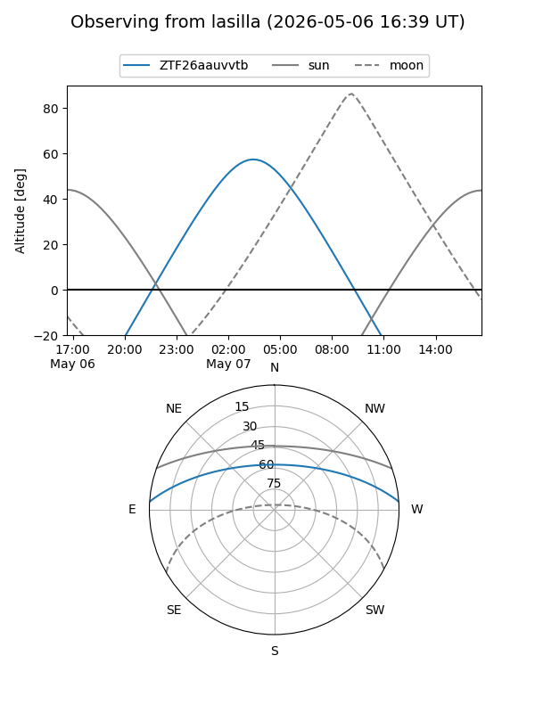
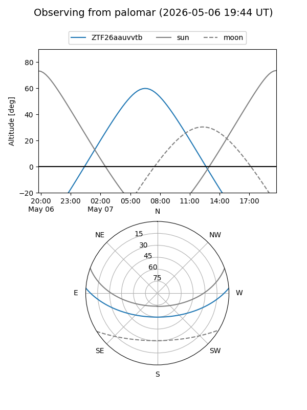

ZTF26aauvvtb
Target ZTF26aauvvtb at 2026-05-07 07:31
Aliases and brokers:
FINK: link
Lasair: link
ALeRCE: link
alt names
ZTF26aauvvtb (ztf,fink_ztf)
Coordinates:
equatorial (ra, dec) = 205.6580,+3.42552
equatorial (HMS+DMS) = 13:42:37.93,+03:25:31.87
galactic (l, b) = (332.4420,+63.32547)
Flags:
Photometry:
last ztfg=19.23
1 ztfg detections
Lightcurve

Visibility


Additional plots